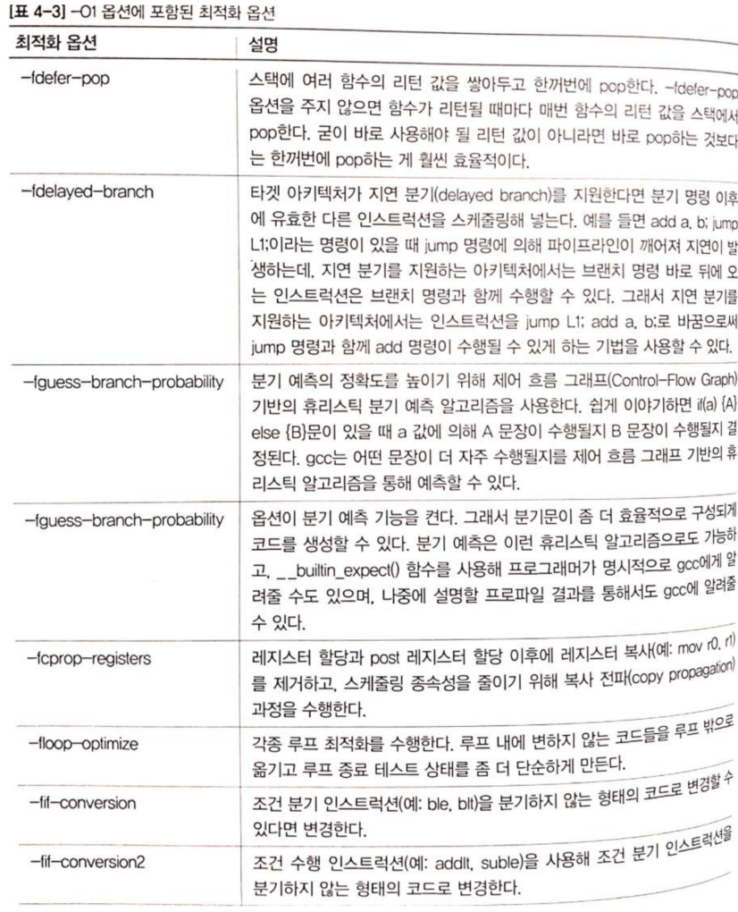

컴파일 <1> Build, 컴파일 옵션
빌드 시스템의 용도
- 컴파일
- C/C++ 같은 컴파일형 언어(Compiled Lang)
- 패키지와 테스트
- Perl, Python 같은 인터프리트 언어(Interpreted Lang) SW 패키지, 테스트
- 웹 애플리케이션 컴파일, 패키지
- 정적 HTML, JSP, ASP, PHP …
- PDF, HTML 문서 생성
- 정적 분석(static analysis) 수행
- 소스코드로 부터 버그 찾기
- 빌드 시스템의 출력물은 버그 리포트 문서
- 단위 테스트(unit test)
- SW의 전체 소스코드에서 작은 부분을 분리해 독립적 검증
- 빌드 트리(build tree) 클리닝(clean)
- 컴파일할 때 생성된 모든 파일 제거
- 실행 파일 설치(install)
- 표준 바이너리 경로로 실행 파일 복사
빌드 시스템
- C/C++, 자바, C# 같은 컴파일형 언어를 위한 빌드 시스템
-
생성된 결과는 머신에 install할 수 있는 릴리스 패키지(Release Package)
- 주요 구성요소
- 소스 트리 - 오브젝트 트리 - (단위 테스트 스위트, 문서 생성)
ㄴ(결합 리포트)
- 소스 트리 - 오브젝트 트리 - (단위 테스트 스위트, 문서 생성)
- 소스 및 오브젝트 트리
- 각 클래스
- 외부 행동(external behavior): 프로그래머가 항상 명심 해야하는 것 들 - 내부 행동(internal implementation): 클래스의 복잡도를 외부 관점에게서 숨김 - 소스 트리
릴리스 패키징과 타겟 머신
- 최종 패키징단계에선 사용자 머신에 실제로 설치할 수 있는 무언가를 만들어야 한다.
- 불필요한 디버그 정보 삭제
- 아카이브 파일, 패키지 관리 도구(.rpm, .deb), GUI 도구
소스 파일들 —–> 오브젝트 파일 ——> 실행 바이너리 ——–> 릴리스 패키지
링크 데이터 이미지 파일 ——-┘
빌드 과정
- 빌드: C언어 작성한 프로그램을 기계어로 변환해 실행가능한 파일로 만드는 작업
- 빌드 내에서 수행되는 작업
- 전처리(preprocess)
.i파일- #include, #ifdef, #define 등을 처리해 C코드로 변환한다.
- gcc
-E옵션을 붙여 실행하면 전처리 수행한 결과를 출력
- 컴파일(compile)
.s파일- *.c를 어셈블리어로 변환한다.
- gcc에서 컴파일은
ccl프로그램이 컴파일을 담당한다. - gcc
-S옵션을 붙여 실행하면 .s 어셈블리 파일 출력
- 어셈블(assemble)
.o파일- *.s파일을 오브젝트 파일 *.o로 변환
- gcc가 아닌 binutils 라는패키지에 포함된
as라는 명령어가 담당한다. - 오브젝트 파일은 아래와 같이 3가지 종류가 있다.
- ELF(Executable and Linking Format)
- COFF(Common Object File Format)
- a.out(assembler output)
- 링크(link)
- *.o -> bin, *.a, *.so
- bin: 그 자체가 하나의 오브젝트 파일, 리눅스에서 ELF 포맷 사용
- *.o -> bin, *.a, *.so
- 전처리(preprocess)
Toolchain Program
| 명령 | 설명 |
|---|---|
| addr2line | 실행 파일 안의 디버그 심볼을 읽어서 프로그램 주소를 파일 이름과 행 번호로 변환한다. 시스템 크래시 리포트에 출력된 주소를 해독할 때 매우 유용하다. |
| ar | 아카이브 유틸리티 static 라이브러리를 만들 때쓰인다. |
| as | GNU 어셈블러 |
| c++filt | C++와 자바 심볼을 복원(demangle)할 때 쓰인다. |
| cpp | C 전처리기, #define #include 등의 지시자를 확장할 때 쓰인다. |
| ld | GNU 링커 |
| nm | 오브젝트 파일의 심볼 나열 |
| strip | 오브젝트 파일의 디버그 심볼 테이블을 없애 파일 크기를 줄여준다. 흔히 타깃에 복사할 모든 실행 코드에 적용한다. |
| elfedit | ELF 파일의 ELF 헤더를 업데이트할 때 쓰인다. |
| g++ | GNU C++ |
| gcc | GNU C |
| gconv | 코드 커버리지 도구 |
| gdb | GNU 디버거 |
| gprof | 프로그램 프로파일링 도구 |
| objcopy | 오브젝트 파일 복사 및 번역 |
| objdump | 오브젝트 파일 정보 출력시 사용 |
| ranlib | static 라이브러리 안의 인덱스를 만들거나 수정해 링크 단계를 더 빠르게 한다. |
| readelf | ELF 오브젝트 형식의 파일에 정보를 출력한다. |
| size | 섹션 크기와 전체 크기를 나열한다. |
| strings | 파일 안의 인쇄 가능 문자열들을 출력한다. |
C/C++ 컴파일 차이
- g++를 이용한 C++은 함수 심볼을 mangled한다.
#include <stdio.h>
void dbg(const char *s){
printf("Log: %s\n", s);
}
$ gcc -c dbg.c
$ nm dbg.o
00000000 T dbg "함수 dbg의 심볼"
U printf
$ g++ -c dbg.c
$ nm dbg.o
00000000 T _Z3dbgPKc "mangled된 함수 dbg의 심볼"
U __gxx_personality_v0
U printf
- g++에선 함수 심볼을 mangled시키기 때문에 C컴파일로 컴파일한
main.o(gcc C)는 링킹 시,
dbg.o(g++ C++)에서dbg 심볼을 찾지 못한다.
gcc 옵션 적용 규칙
-f, -fno-
-[f|W|m][옵션]은 설정
-[f|W|m]no-[옵션]은 해제
-fcse-skip-blocks : ‘cse-skip-blocks’ 옵션 설정한 것
-fno-cse-skip-blocks : ‘cse-skip-blocks’ 옵션을 해제
동일 종류의 옵션은 최종 옵션만 옵션 변수에 값이 설정
-Wunused-function : 소스 파일 내에 사용되지 않은 함수가 있을 때 경고 출력
$ gcc -o like like.c -Wunused-function -Wno-unused-function
최종 옵션인, -Wno-unused-function 옵션에 의해 저 옵션이 해제된다.
그룹 옵션이 존재한다
-fdump-tree-all 옵션은 아래 옵션들을 동시에 준 것과 동일
-fdump-tree-original[-n] -fdump-tree-optimized[-n] -fdump-tree-inlined[-n] ….
플래그
| 플래그 | 뜻 | 예제 |
|---|---|---|
| -f | 플래그 | -fdump-tree-original |
| -W | 경고 | -Wunused-function |
| -m | 아키텍처 종속 | -mcpu=armv7-a |
gcc 옵션
gcc -v -I/usr/local/include -DDEBUG -W -Wall -O2 -L/usr/local/lib -o like like.c -lm
- -E: 전처리 과정의 결과를 화면에 보이는 옵션
- gcc -E like.c
- -S: 어셈블리 파일만 생성하고 컴파일 과정을 멈춘다.
- gcc -S like.c -> like.s
- -c: 오브젝트 파일까지만 생성
- gcc -c like.c -> like.o
- -v: gcc가 컴파일하는 과정을 화면에 자세히 출력한다.
-
–save-temps: 컴파일하는 과정중, 전처리 파일(*.i), 어셈블리 파일(*.s), 오브젝트 파일(*.o)를 지우지 않는다.
- -o: 출력 파일 명을 정하는 옵션
- gcc hello.c -o hello
CPP: 전처리기
-D
-D[macro]: 전처리기한테, macro를 넘겨 define 시킨다.
CC = gcc
CPP = -DDEBUG
$(CC) $(CPP) like.c -o like
=>gcc -DDEBUG like.c -o like
like.c 파일에 #define DEBUG 를 삽입한 것과 같다.
- 왜 쓰나?
like.c 파일에
#ifdef DEBUG
printf("%d...");
#endif
처럼 디버그용으로 쓰고, file path넘길 때도 쓰고..
CFLAGS
-O0 ~ -O3
-O0- 어떠한 것도 최적화하지 않는다.
- inline 키워드를 써도 인라인 확장이 일어나지 않는다.
- 컴파일 시 최적화 옵션을 쓰지 않았다면, -O0 셋
- time 명령어로 실험해본다.
$ time ./test
real 0m5.209s
user 0m2.475s
sys 0m0.002s
총 5.209s가 걸렸고, 유저에서는 2.475s 걸렸다.
-O1- -O 옵션과 동일하다.
- gcc에서 수행하는 효과가 큰 몇 가지 기본 최적화를 수행한다.

- 잠시 위 표에 있는
-floop-optimize옵션을 알아보자.
int y=1+2;
for(i=0;i<n;i++){
j=j+2;
k=y+3;
z=k+1;
}
루프에서 변하지 않는 코드를 밖으로 unrolling한다.
int y=1+2;
k=y+3;
z=k+1;
for(i=0;i<n;i++)
j=j+2;
- -O1 옵션을 넣고 컴파일 한 후, 시간 측정
$ time ./test
real 0m3.155s
user 0m1.767s
sys 0m0.002s
user에서 확 줄었다.
-O2- 가장 많이 사용한다. App, kernel compile시 주로 사용한다.
- 수행 속도와 사이즈 간에 트레이드오프가 존재하지 않는 거의 모든 최적화 수행
- -O1 옵션 최적화 + 아래 표의 최적화도 더함
- 위에서 공통 부분식 제거(Common Subexpression Elimination)을 알아보자
x=a-b;
w=c+a-b;
y=c*d;
x=d+c;
Optimize..
t0=a-b;
x=t0;
w=c+t0;
y=c*d;
x=d+c;
$ time ./test
real 0m3.194s
user 0m1.621s
sys 0m0.002s
user에서 0.1초 줄었다.
하지만 -O1 결과가 -O2 보다 빠를 수 있고, -O2가 -O3보다 더 빠를 수도 있다
-O3- 가장 높은 레벨의 최적화
- 단순한 함수들의 인라인 과정이 일어나 바이너리 사이즈가 커진다.
- O0 + O1 + O2 + 아래 표의 최적화
$ time ./test
real 0m1.177s
user 0m0.696s
sys 0m0.002s
-Os- 사이즈 최적화
- -O2 옵션 중에서 사이즈를 늘리는 최적화만 제거하고 나머지 최적화는 다 수행한다.
- -O2 옵션에서 아래와 같은 옵션이 비활성화
$ time ./test
real 0m3.020s
user 0m1.473s
sys 0m0.004s
- O2 옵션보다 오히려 속도는 잘나왔다.
- 사이즈가 작아짐으로 인해 캐시 히트가 더 자주 발생했을 수도 있다.
- 바이너리 사이즈가 작으면 캐시에 들어가는 inst 비율이 증가해 수행 속도가 향상될 수 있다.
-march, -mtune, -mcpu
-march=[cpu-type]- -march=armv7-a
- 지정하는 ISA코드를 생성한다.
- -march=pentium4 시, pentium4에서 지원하는 ISA로 코드를 생성한다.
- -march는 -mtune을 내부적으로 포함한다.
- -march=pentium4 지정 시, -mtune=pentium4 지정 안해도 무방
-mtune=[cpu-type]- 인스트럭션을 스케줄링 하거나 정렬할 때 -mtune 옵션으로 지정해 준 cpu에 최적화되게 스케줄링하고 정렬
- 이 때 고려되는 것은 각 CPU의 파이프라인 단계와 각 인스트럭션을 수행하는 데 걸리는 사이클 버스와 캐시의 크기 등이 있다.
- Pen3는 파이프라인이 10개, Pen4는 20개, CPU stall을 줄이기 위해 인스트럭션 순서를 섞을 때 -mtune 옵션으로 지정한 CPU에 최적화되게 인스터럭션을 섞는다.
- 인스트럭션 스케줄링이란 CPU내부의 특정 자원이 사용 가능치 않아 CPU stall을 줄이기 위해 인스트럭션 수행 순서를 바꾸는 것이다.
- 인스트럭션 정렬이란 함수나 레이블이 시작하는 주소를 해당 CPU의 버스 너비와 캐시의 크기에 최적화한다.
- CPU 특성을 반영해 최적화된 코드를 생성하는 역할만 담당한다. ISA에 영향을 주는 것은 아니다.
- -mtune=pentium4 옵션으로 컴파일 해도, i386 ISA를 사용했다면 오래된 펜티엄에서도 동작
- -mtune=athlon-xp 해도 ISA를 펜티엄으로 하면 펜티엄에서 돌아간다. 단지 좀 비효율적
- -march 옵션은 주지 않고, -mtune 옵션만 주어 ISA는 모든 x86 아키텍처에 공통된 것을 사용하게 하고, 스케줄링과 코드 정렬만 특정 프로세서에서 최적화할 수 있다.
-mcpu=[cpu-type]- -mtune과 거의 동일하다.
-march 종류
- x86 아키텍처에서 -march와 -mtune -mcpu에서 지정할 수 있는 cpu-type은 generic만 제외하고 동일하다.
- generic은 -march에서 사용할 수 없다.
- generic은 현재 가장 보편적인 프로세서를 의미하고 gcc-4.1.2에서는 i686로 지정되어 있다.
arm-[vendor]-linux-gnueabi-[gcc/g++/ld] -march=armv7-a
프로파일 결과를 이용한 최적화
사용법 및 다양한 플래그
- like.c 파일을
-fprofile-generate옵션을 주어 컴파일한다.
$ gcc -O2 -o like like.c -fprofile-generate
- like bin파일을 한번 수행한다. 그러면, 프로파일 결과들이 있는 파일들(like.gcda, like.gcno)가 생성됨
- like.c 파일을 -fprofile-generate 옵션을 빼고
-fprofile-use옵션을 추가해 like.c를 다시 컴파일한다.- gcc는 like.gcda, like.gcno를 이용해 좀 더 최적화한 like bin 파일을 만든다.
$ gcc -O2 -o like like.c -fprofile-use
- -fprofile-use: 프로파일 정보를 이용해 할 수 있는 모든 최적화를 수행한다. 이 옵션에 의해 선택되는 최적화 옵션은 다믕과 같다.
- -fbranch-probabilities 분기 최적화
- 분기문이 있을 때, 프로그램이 주로 어떤 쪽으로 분기하는지 파악하고 이를 적용해 파이프라인이 최대한 깨지지 않게 하는 코드 생성
- -funroll-loops 루프 최적화
- 루프가 몇 번 도는지 알고, 최적화 할 수 있다면 언롤링
- -fpeel-loops 루프 최적화
- 프로파일 정보로 부터 루프가 그다지 많이 돌지 않는다면 사용, 루프 필링이란 루프 내에 인덱스와 인접하지만 다른 값을 가지면서 인덱스 범위 내에서 인덱스의 증감과 같이 변하는 연산을 루프 밖으로 빼는 것
- -ftracer 베이직 블록을 슈퍼 블록으로 만든다.
- 프로파일 결과를 토대로 베이직 블록을 슈퍼 블록으로 만든다. 베이직 블록의 개념은 다음과 같다.
- -fbranch-probabilities 분기 최적화
CTest.c
#include <stdio.h>
int main(void){
int i,j,k;
j=0;
k=0;
for(i=0; i<10; i++){
if(i%2!=0)
j+=1;
else
k+=1;
printf("j=%d,k=%d\n",j,k);
}
return 0;
}
위 코드를
$ gcc -o CTest CTest.c -fdump-tree-all => CTest.c.t21.cfg 파일 생성
CFG: Control Flow Graph 제어 흐름 분석을 통해 생성된 결과 파일
- 베이직 블록: 제어 흐름 단위로 나눠진 블록
- 블록 내에서는 제어 흐름이 변치 않고 순차적으로 진행
- 제어 흐름이 바뀌는 단위로 나눈 소스 코드으 ㅣ블록
- 베이직 블록 내에는 베이직 블록이 끝나는 시점이나 시작되는 시점이 아니고서는 브랜치 문과 같이 제어 흐름을 바꿀 수 있는 Inst는 존재하지 않는다.
- 이 제어 흐름을 그래프로 그린 것이 CFG이다.
- 슈퍼 블록: CFG에서 인접한 베이직 블록들을 합쳐 좀더 크게 만든 블록
- 베이직 블록 -> 슈퍼 블록, 꼬리 복제(tail duplication)이라는 기법 사용
- 베이직 블록 -> 슈퍼 블록, inst scheduling 효율 향상
- instruction scheduling
- 베이직 블록 단위로 수행하는데, 스케줄링할 inst 개수가 적으면 스케줄링 효율이 감소한다.
- 지연이 발생되는 구간에 끼워 넣을 inst 갯수가 적기 때문
- 베이직을 슈퍼로 만들면 블록 크기가 훨씬 커져 스케줄링할 대상이 되는 inst 개수가 많아져 스케줄링 효율 향상
- fvpt: 조건식의 값에 대한 정보를 수집하는 코드 추가
- 컴파일러가 조건식의 값에 대한 정보를 수집하는 코드를 추가하게 한다. 그 정보를 바탕으로 최적화 수행
- 컴파일러가 조건식의 값에 대한 정보를 수집하는 코드를 추가하게 한다. 그 정보를 바탕으로 최적화 수행
함수 프레임 포인터 제거
$ gcc -o exp exp.c --save-temps
-fomit-frame-pointer: 프레임 포인터 설정이 필요 없는 함수에 대해 프레임 포인터 설정을 제거
- rbp 레지스터는 x86_64 아키텍처에서 프레임 포인터로 사용되는 레지스터
- add()와 sub() 최상위 보면 이전 레지스터의 값(rsb)를 스택에 push 후, ‘rsp’ 스택 포인터를 rbp 레지스터에 설정하는 것 보일 것임
-
함수의 시작 부분에서 rbp 레지스터의 값을 현재 rsp(스택 포인터)의 값으로 변경하는 것을 함수의 프레임 포인터를 설정한다고 한다.
- 각 함수 마지막 부분을 보면 저장했던 rbp 레지스터를 다시 popq 명령으로 복구하는 것이 보인다.
- 이는 이전 함수의 프레임 포인터로 복구하는 과정
prefetch를 이용한 최적화
-fprefetch-loop-arrays: 루프에 진입하기 전에 컴파일러는 루프 내에서 사용할 메모리 영역을 캐시에 미리 가져다 놓음
- 현대 모든 아키텍처는 프로세서 매우 빠름, 메모리 아주 느림
- load 명령에 많은 클록 사이클 소모
- 큰 배열이 있을 때 루프를 돌면서 배열을 순차적으로 액세스 하면서, 어떤 명령을 수행한다 -> 배열 값이 캐시에 없다 -> load 발생 증가 -> 성능 하락
- Prefetch는 이런 값을 미리 캐시에 가져다 둠
레지스터를 활용한 최적화
-
-fforce-mem: 메모리에 있는 값을 레지스터에 로드해 연산 수행. GCC 4.2에서 제거된 옵션이지만 이전 버전에서 사용 가능 -
-fforce-addr: 메모리 주소 값을 레지스터에 로드 후 연산을 수행
gcc 컴파일 속도 최적화
-pipe: 컴파일 속도 상승- gcc는 컴파일 시 /tmp에 임시 파일을 생성하고, 각 과정의 바이너리는 이런 임시 파일을 입력으로 받아 다음 과정 수행
- -pipe 사용 시, 컴파일 과정에서 임시 파일을 생성해 전달하지 않고 파이프로 전달해 컴파일 속도 향상
환경 변수(env)를 사용한 gcc설정
-
COMPILER_PATH -
CC, CPP, AS, LD를 호출할 때, COMPILER_PATH에 등록된 디렉터리에서 먼저 찾는다.
export COMPILER_PATH=/opt/arm-:root
C_INCLUDE_PATH, CPLUS_INCLUDE_PATH, OBJC_INCLUDE_PATH
- 전처리할 때, 헤더 파일을 찾을 디렉터리를 지정하는 환경 변수
- 설정 해두면, -I(대문자 i) 옵션으로 참조할 path 안해줘도 됨
- 각각 C, C++, Objective-C 소스에 대한 Include Path 지정
LIBRARY_PATH
- 라이브러리 찾을 디렉터리 지정
- ld에게 LIBRARY_PATH에 등록된 디렉터리들을 -L 옵션으로 넘긴다
specs 파일을 이용한 gcc설정
-v
- 제일 처음에 다음과 같은 메시지가 출력된다.
$ gcc -o test test.c -v
Using built-in specs...
-dumpspecs
- 내장된 specs파일을 보는 옵션
$ gcc -dumpspecs > specs # gcc
$ arm-starfishmllib32-linux-gnueabi-gcc -dumpspecs > specs # arm gcc
- gcc -dumpspecs > specs 명령을 사용해 gcc에 내장된 specs 파일을 덤프해 보면 다음과 같은 specs 파일을 볼 수 있다.
- specs 파일은 컴파일러 드라이버(gcc, g++..)가 수행될 때 읽고 specs 파일에 적힌 각 바이너리(CPP, CC, AS, LD)들을 호출하게 되어 있다.
specs파일을 수정해 원하는 형태로 각 바이너리들을 호출할 수 있다.
$ vi specs
```일
<img src="img11.png">
```bash
%{pg:%{formit-frame-pointer:%e-pg and -fomit-frame-pointer are in compatible}}
-pg 옵션이 있고 동시에 -formit-frame-pointer 옵션이 있다면, 오류(%e)로 “pg and -fomit-frame-pointer are incompatible”문자열 출력하라.
%{!Q:-quiet}
-Q 옵션이 없다면, -quiet 옵션을 추가하라는 의미
- ARM과 같은 크로스 컴파일 환경에서는 프로파일 정보를 어떻게 수집하는가?
- 시뮬레이터 사용 Simit-ARM 시뮬레이터 사용
- http://simit-arm.sourceforge.net 에서 simit-arm release 3.0 설치
- www.falinux.com/zdownload/toolchain.php 에서 arm-toolchain-3.3.4.tar.gz 받아서 ARM 크로스 컴파일러 설치(3.3.4)
- 소스 파일을 arm-linux-gcc 컴파일러로 컴파일 할 때 -O2 -static -fprofile-generate 옵션을 주고 컴파일
- simit [바이너리] 명령으로 실행하면 프로파일 정보가 들어있는 파일들이 생성된다.
- O2 -static -fbranch-probabilities 옵션 등으로 재 컴파일한다.
- 그냥 ARM 보드에서 직접 수행
-g: 디버깅
-g: 디버깅 옵션
- 디버거에 제공하는 디버깅 정보를 바이너리에 삽입
- 디버깅 옵션시, 최적화 금지
- 디버깅 옵션시, 삽입한 바이너리는 용량이 매우 커짐. 개발 초기에만 사용할 것.
- 디버깅 정보: 변수 타입, 전역 심볼명과 주소, 소스 라인 정보등이 DWARF2라는 디버깅 정보 포맷으로 되어있음
- -g 바이너리 컴파일시, DWARF2 디버깅 포맷이 ELF 바이너리에 섹션 형태로 삽입된다.
- $ readelf -a [bin]으로 바이너리를 읽으면, .debug_*로 시작하는 섹션들이 DWARF2를 구성하는 섹션들임
- -g 미 옵션 시, 어셈블리 코드로 디버깅할 수 밖에
-g0: 디버깅 정보를 삽입하지 않는다.-g2: = -g-g3: 디버깅 정보 가장 많이 삽입
odjdump -S로 덤프 떠보기
- test.c
#include <stdio.h>
int main(){
printf("hello world!\n");
return 0;
}
$ gcc -g -o test test.c
$ odjdump -S test
… <생략>
-pg: 프로파일
-pg
- 컴파일한 프로그램이 종료하면, 프로파일 정보가
gmon.out파일에 저장된다. gprof로 gmon.out 파일의 내용을 분석해 어떤 함수가 얼마나 호출되었고, 시간은 얼마나 걸렸는지 확인가능
1. $ gcc -pg -o test test.c
2. $ ./test
3. $ <--- gmon.out 생성
4. $ gprof ./test
-shared: shared 라이브러리 사용 우선, shared 만들기
-shared
- 2가지용도, shared 우선 사용, shared 만들기
$ gcc -fPIC -c test1.c
$ gcc -fPIC -c test2.c
$ gcc -shared -o libtest.so test1.o test2.o
$ gcc -L. -shared -o test test.c -ltest
- -ltest 로 링크 걸었는데, libtest.a, libtest.so 둘다 있다.
- -shared 옵션 시, libtest.so 링크
- 근데, 기본적으로 아무 옵션을 안줘도 shared라이브러리를 우선 링크
-fPIC
-fPIC
- -f: set!
- PIC: Positino-Independent Code 생성하라
- Shared library는 메모리 어느 위치에 로딩되는지가 컴파일 타임에 결정되지 않기 때문에, 절대 주소가 아닌 상대 주소를 주는 옵션
- 다른 바이너리에서 이 라이브러리의 함수를 호출할 때 PLT와 GOT를 사용하도록 하는 옵션
- library의 mapping 주소 + offset = 해당 Symbol의 주소
- mapping 주소는 ldd로 확인
- offset은 nm으로 확인
-static: static 라이브러리 사용 우선
-static
- static라이브러리 우선 사용
- PLT, GOT 사용하지 않고 바로 call libcaddr
- dynamic linking 사용 안하기 때문에, 라이브러리 종속성 제거
$ gcc -static -o like like.c
-nostdlib
-nostdlib
- 링크 시,
표준 C 라이브러리 사용 안함 - OS, bootloader, Device Driver 같은 표준 C 라이브러리를 사용하지 않는 프로그램을 컴파일할 때 사용
-nostartfiles
-nostartfiles
- crt1.o, crti.o, crtbegin.o, crtend.o, crtn.o 등과 같은 crt 오브젝트 파일들을 링크하지 않는다.
- OS, bootloader 같은 프로그램을 컴파일할 때 사용
LDFLAGS
-L: 라이브러리 path
-L[path]
- path에 라이브러리를 찾을 디렉터리 지정
- shared, static 모두 찾음
- 기본적으로 찾아보는 디렉터리
- /usr/lib, /usr/local/lib, /lib
-
.so파일 못찾을 땐, export LD_LIBRARY_PATH=path:$LD_LIBRARY_PATH
- -L 옵션 사용 예
$ /opt/lib/libclsched.a <-- 라이브러리 파일 위치
$ gcc -o like like.c -L/opt/lib -lclsched
- -L 여러 곳 필요시
$ gcc -L${HOME}/lib -L${HOME}/other main.c -lmylib1 -lmylib2 -o main
따로 따로 지정
-Wl,[링커 옵션]
-Wl,[링커 옵션]
-Wl류 옵션은 gcc를 거치지 않고 바로 링커에 옵션을 전하려 할 때 사용
$ gcc -o like like.c -Wl,-M,-s
- gcc 스킵, collect2에 -M, -s 옵션이 전달된다.
- collect2는 링커인 ld를 찾아서 위 옵션으로 호출
-rpath, -rpath-link
-Wl,-rpath,[path]
- rpath는 shared 라이브러리 검색 path만 추가
-
-rpath와 -L이 동시에 사용되면, -L은 무시됨
- 사용 예
$ gcc -Wl,-rpath,/usr/local/lib hello.c -lmylib
- 바이너리에 rpath 먹혀 있는지 체크
$ readelf -d a.out | grep RPATH
0x000000000000000f (RPATH) Library rpath: [/usr/local/lib]
-Wl,-rpath-link=[path1]:[path2]
- rpath-link는 shared라이브러리 검색 패스를 추가한다.
-rdynamic
-rdynamic
- dynamic linking
- 링커에게 -export-dynamic을 넘기는 것, -Wl,-export-dynamic과 동일
- 링커가 dynamic symbol table에 모든 symbol을 추가하도록 하는 옵션
- dlopen man page에는 쓰라고 나오는데, -ldl만 보통 써도 된다
-Xlinker [f링커 옵션]
-Xlinker [f링커 옵션]
- gcc가 인식하지 못하는 특정 링커에 대해 옵션을 지정할 때 사용된다.
$ gcc -o like like.c -Xlinker -M -Xlinker -s
- collect2에 -M -s 옵션이 전달되고 진짜 링커인 ld 호출시 -M -s 옵션으로 ld가 호출된다.
-Wl -Xlinker에서 사용가능한 링커 옵션
-s: 실행 파일에서 심볼 테이블 제거-x: 출력 파일에 로컬 심볼 제거-e[name]: 시작 심볼을 name 심볼로 사용한다.$ gcc -Wl,-emain -o like like.c위 명령 시, 시작 심볼로 main 심볼을 사용한다.
기본적으로 시작 심볼은 _start 심볼이다.-M: 링커 스크립트와 메모리 맵을 자세하게 출력한다.- 프로그램의 메모리 구조를 자세하게 알 수 있다.
LIBS
-l : 라이브러리 링크
-l[library]
- 링크할 라이브러리
- 반드시 소스 뒤에 위치, 특히 main 함수 있는 파일보다 무조건 뒤
# libclsched.so 링크
1. $ gcc -o like like.c -lclsched
2. $ gcc like.c -lclsched -o like
-ldl : 동적 라이브러리
-ldl
- 동적 라이브러리용(shared 아님!!)
- dlopen() 사용하려면 꼭 써줘야한다.
- -ldl은 libdl.so를 로딩하는데, 속에 dlopen()이 있다.